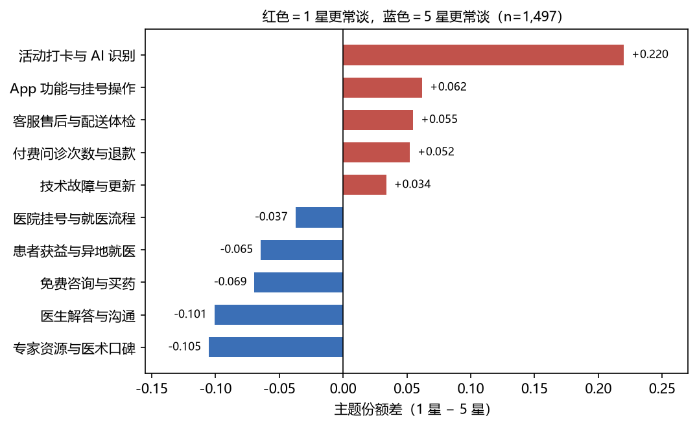
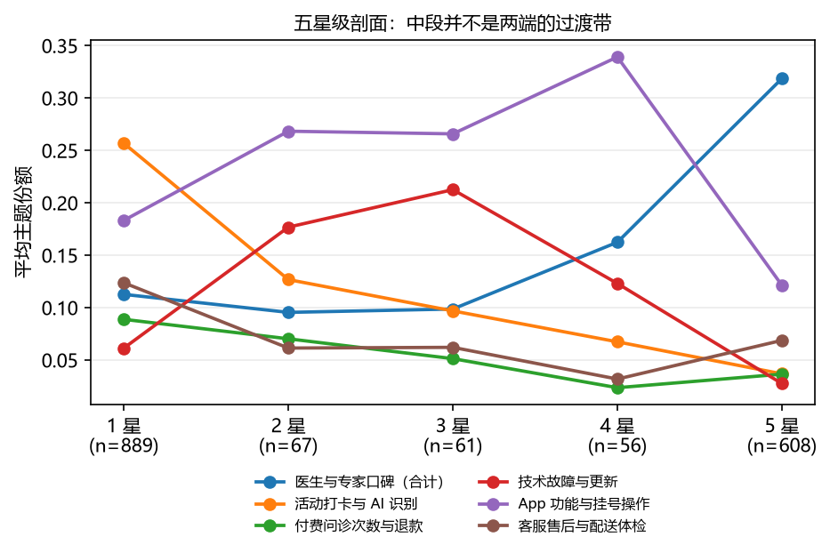
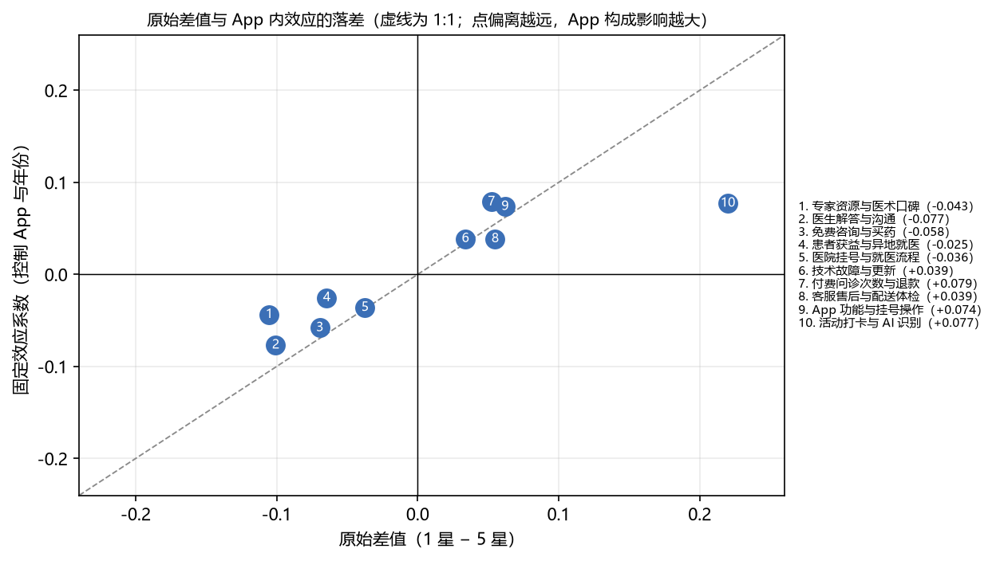
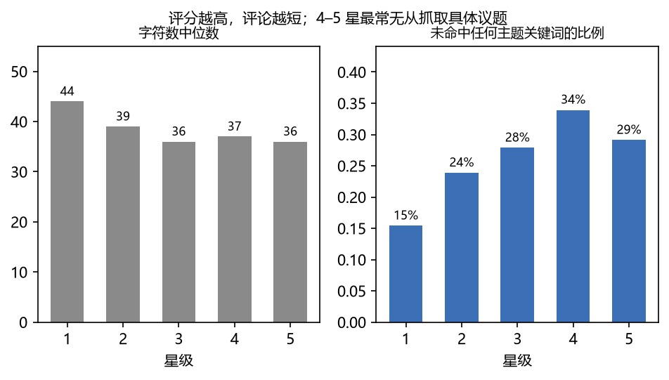
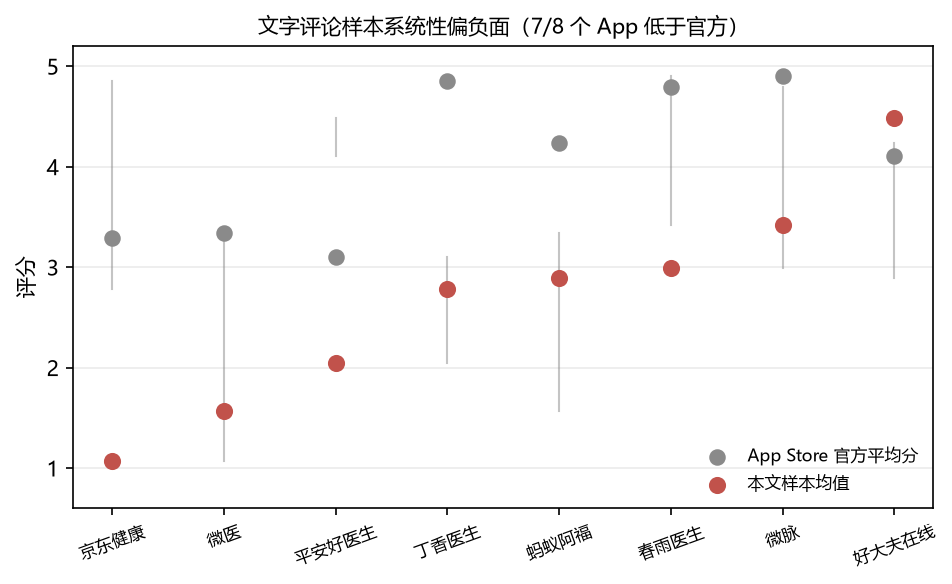
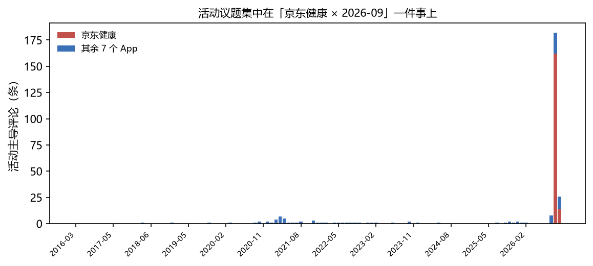

IMBA 申请项目 · 2026
8 个中国互联网医疗 App · 1,681 条 App Store 公开评论
用 NMF 主题模型检验「评分—议题」关系
Agenda
01
为什么用评论做研究；8 个 App、1,681 条样本的选择与清洗。
02
jieba → TF-IDF → NMF（k=10）；形状检验；固定效应与三种口径。
03
两端两套议题 → 中段峰值 → 量级修正 → 空泛好评与 AI。
04
主题是否稳定、抽样偏差多大、哪些话不能说。
01 · 问题与数据
1 星与 5 星是否在谈两套完全不同的事？
如果只看两端，会不会漏掉 2–4 星自己的议题？
提到 AI 的评论，是效率好评还是信任差评？
数据：Apple App Store 中国区公开评论 RSS，每个 App 最近 4–5 页文字评论， 覆盖平台型、互联网医院型、在线问诊型与 AI 健康助手四类产品。 只代表「愿意写文字评论的人」，这一点后面会量化。
原始抓到 1,944 条，清洗后 1,681 条；中间星级仅 184 条（2 星 67、3 星 61、4 星 56）。RSS 每 App 最多 10 页，深页多为 2016–2021 年老评论，所以不再扩样本 —— 宁可小、时间干净。
02 · 方法
去重、去空、过滤非中文与过短文本；按「同日评论数 ≥ max(20, 均值+2SD)」标记爆发日。
1,944 → 1,681jieba 分词（剔除纯极性词、App 名与通用动词）→ TF-IDF → NMF 分解为 10 个主题，人工命名后映射回 codebook。
k=10，词表 742 词把 2/3/4 星一并纳入：share ~ C(rating) + App + 年份，按系数符号与显著性判定形状。
关键一步三种回归口径、多种子 / Bootstrap / 跨 k、剔除爆发日与集中月份、官方评分基准。
见附录报告不用星级去猜态度、也不用人工逐条标注：极性由星级分组承担，主题只负责回答「在谈什么」， 避免「用星级解释星级」的循环论证。词表已剔除「好/差/垃圾」这类纯极性词，否则主题会退化成「好评类 / 差评类」。
03 · 发现一

红＝1 星更常谈；蓝＝5 星更常谈。份额为单条评论主题权重的行内归一化均值。
医生与专家口碑（两个主题合并）0.113 → 0.319，差值 −0.206，是全表最大的差异。
活动打卡 +0.220、付费问诊次数与退款 +0.052；客服售后 +0.055 只在两类产品成立（平台型反向），算弱证据。
免费咨询与买药 +0.069、患者获益与异地就医 +0.065 都偏向 5 星。
03 · 发现二

原始剖面：技术故障在 2–3 星最高，App 功能在 4 星最高，5 星反而回落。
活动返利、付费问诊次数与退款、客服售后——钱和权益出了问题。
技术故障（2 星系数 +0.104，p=0.0025）、App 功能（4 星 +0.107）——东西还能用，但很别扭。
医生与专家口碑（+0.32）——真正被解决的健康问题。
中间星级只有 184 条且集中在 3 个 App，所以形状以控制 App 与年份后的系数为准，不看原始均值。
03 · 发现三
全样本 +0.077、2024–2026 +0.093、剔除京东健康与好大夫 +0.080。
京东健康 214 条样本几乎全是 1 星，且只覆盖 2026-09/10 两个月；剔除该 App 与该月后系数仍有 +0.069 且显著。

点离虚线越远，说明该议题的原始差距里「App 构成」的成分越大。
03 · 发现四

左：字符数中位数；右：未命中任何主题关键词的比例（n=1,681）。
1 星的中位长度比 5 星多 8 个字。
5 星里有近三成评论没有任何可归类的具体对象，两比例检验 p=1.6e-10。
68 条逐条读过——1 星里 19/48 在说「识别不出来、记不住刚说的话」，5 星里 11/12 夸报告解读与轻症先问；另有 16% 其实是关键词误命中。
AI 提及率 1 星 5.4% vs 5 星 2.0%（p=0.001），全样本仅 68 条，且 57 条来自蚂蚁阿福与京东健康——只作次要观察。
04 · 稳健性与边界

样本均值 2.66 vs 官方加权 4.55；7/8 个 App 低于官方（符号检验 p=7.8e-03）。

活动主导评论按月分布：2026-09 一个月占 65.7%，其中京东健康占该月 92%。
不满意的用户更愿意写字，所以所有份额只读成「评论者中的份额」，不做全体用户校正。
多种子 10 次、Bootstrap 50 次、k=8/12/14；「App 功能／客服售后／技术故障」会合成一族，故中段不拆三条证据。
逐层剔除京东健康与 2026-09 后系数仍有 +0.069 且显著：方向稳健，量级只当作上限。
换算法：NMF 换 LDA，7/10 个主题方向同号（医生合并主题 −0.206 vs −0.203）。 换范式：句向量 + UMAP + HDBSCAN 自动得 33 个簇、26.7% 噪声，「两端不同簇」与「技术故障簇 54% 为 2–4 星」都复现。 换比较范围：按四类产品分组，8 个议题 7 个四类同号；参照组再收紧到「同一 App、同一月份」，系数最大只动 0.014。 结论不是某一套算法或某一类产品的产物；但两套方法都无法与 10 个主题一一映射，因此只比对方向，不做主题级数值对比。
结论
评分不是好坏刻度，而是用户处境的刻度；而所有份额都只属于愿意写字的评论者。
1 星
活动返利、付费问诊次数、客服售后 → 自动转工单，不进人工客服队列
2–4 星
技术故障 2 星达峰、App 功能 4 星达峰 → 按崩溃日志与路径回传，不当差评处理
5 星
医生议题 0.113 → 0.319 是最大差异；但 29.1% 的 5 星没有具体对象，别当产品反馈用
谢谢